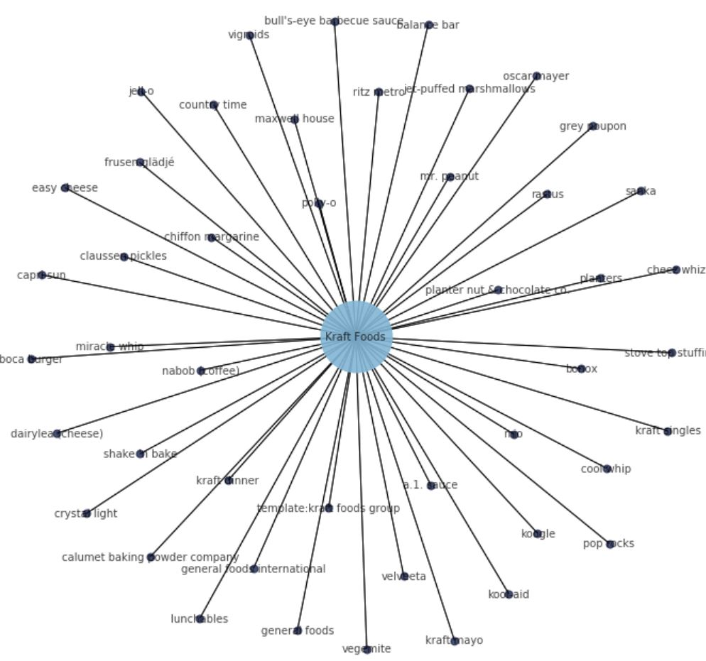
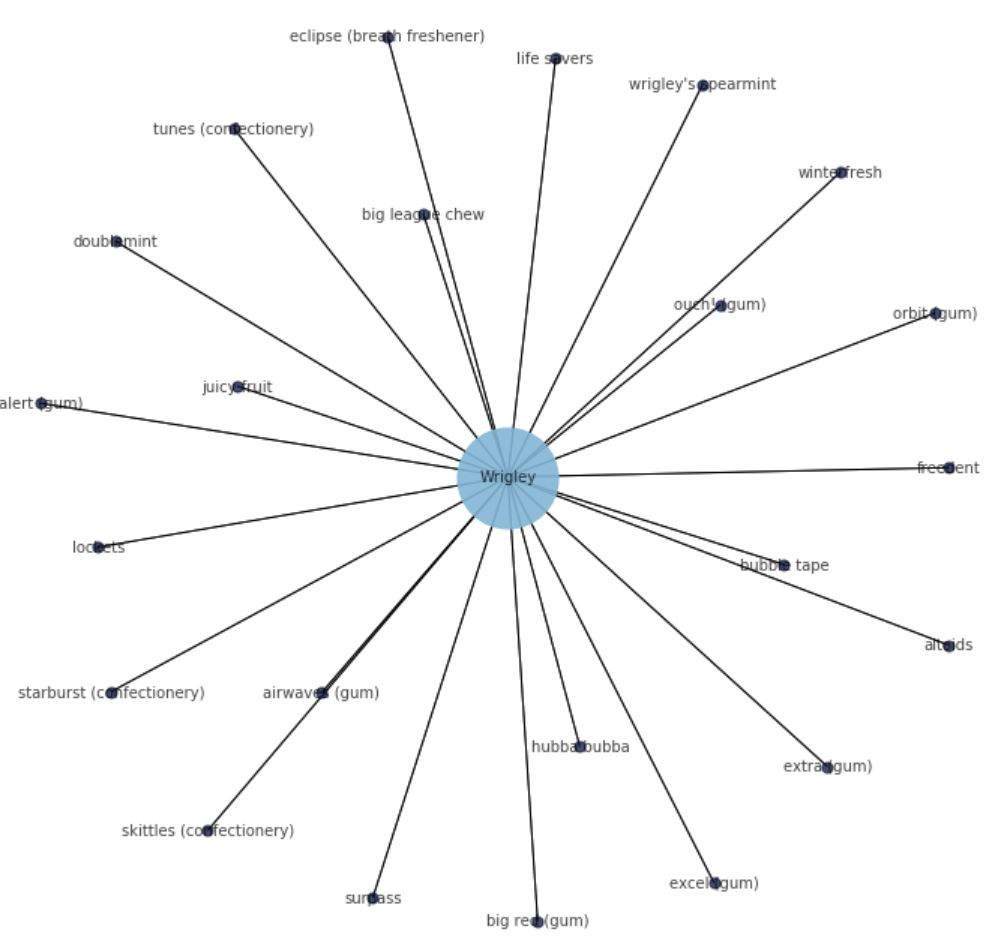
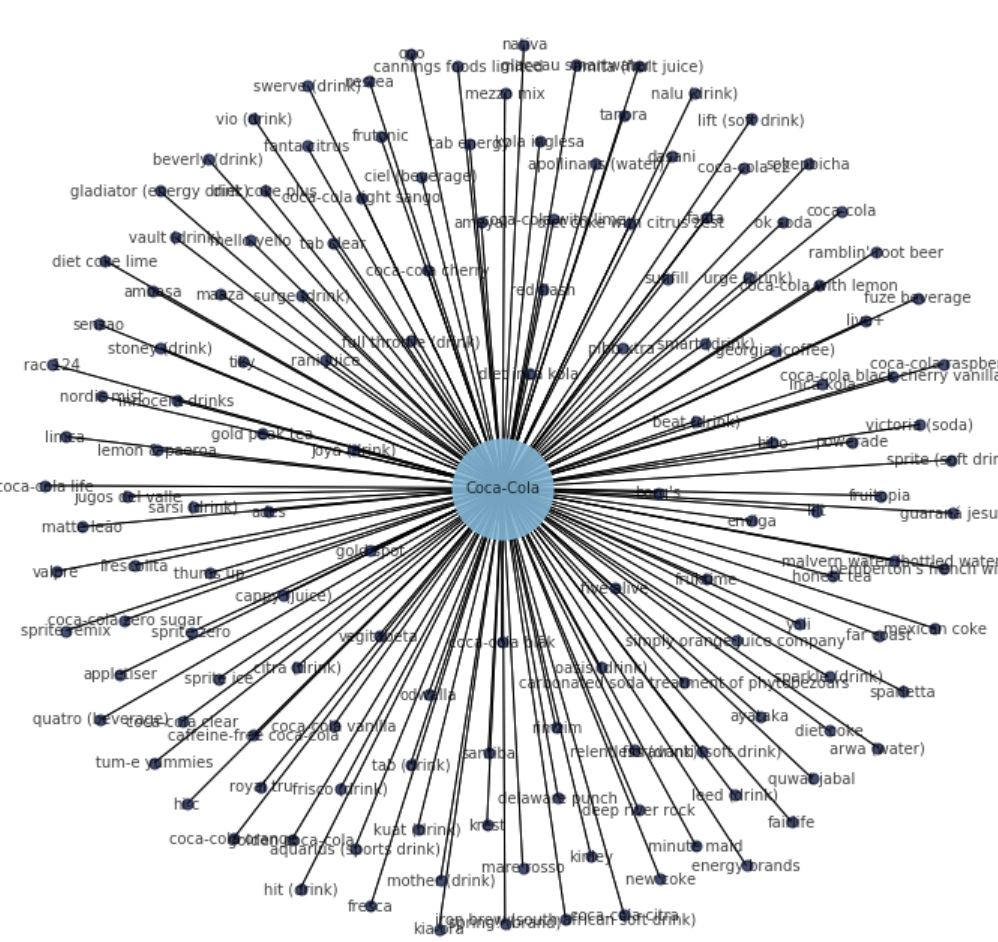
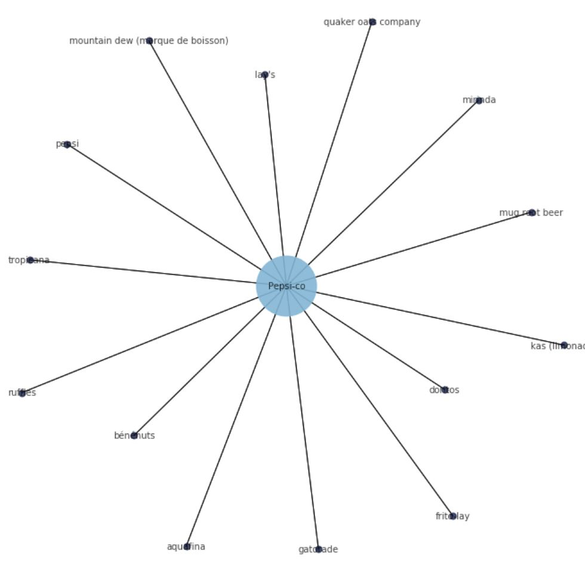
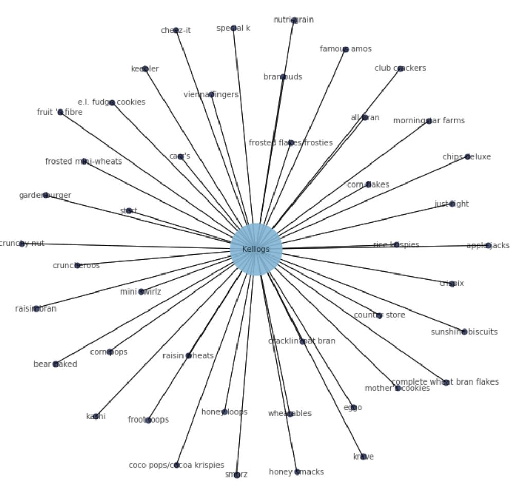
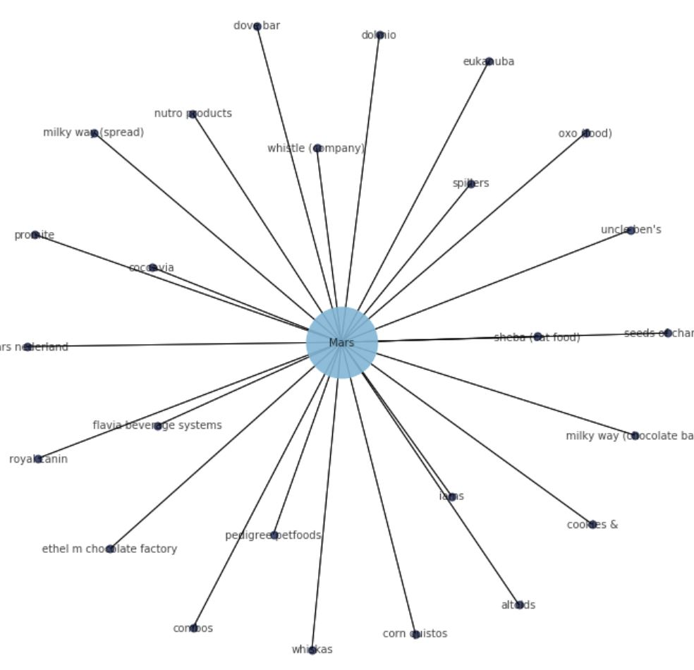
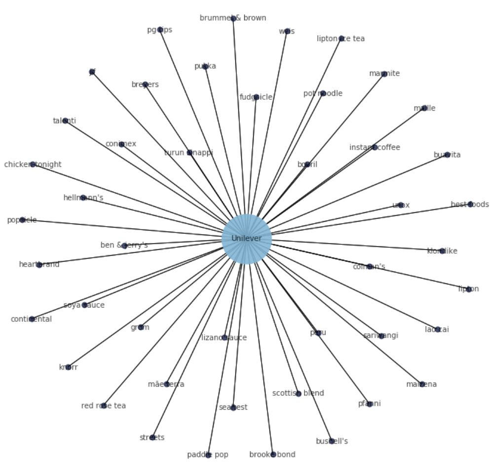
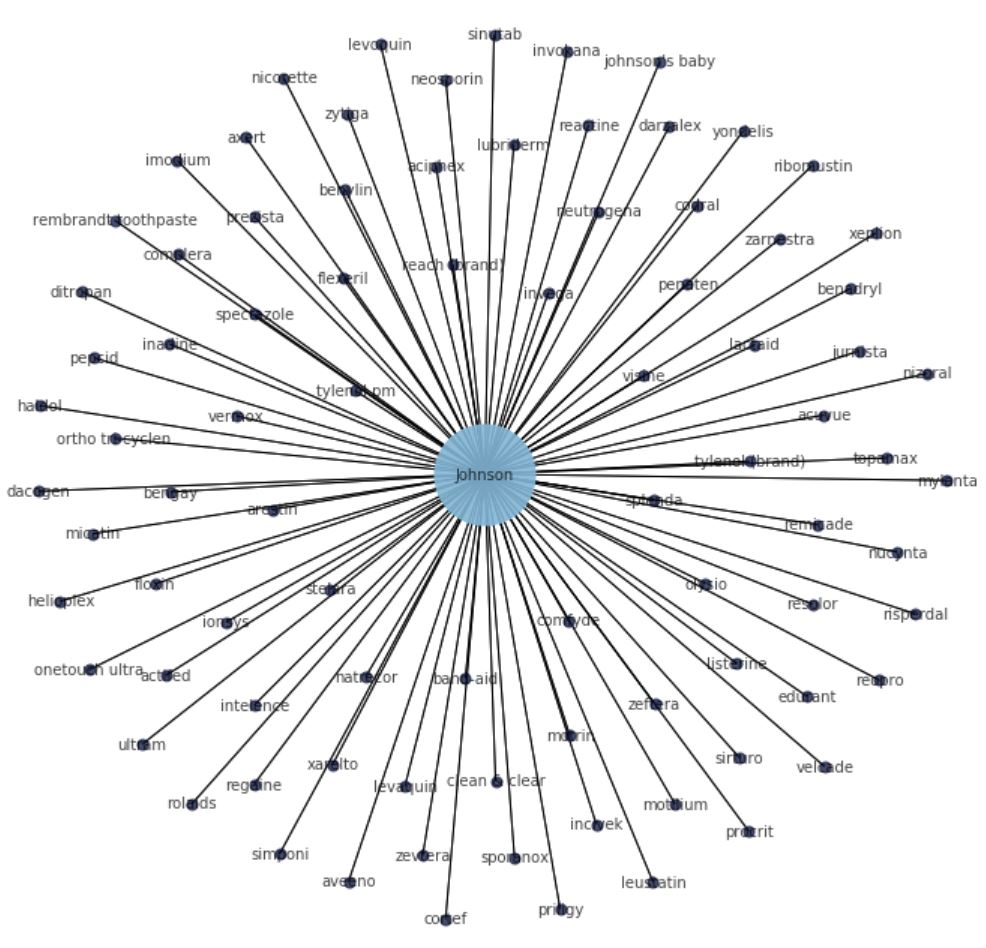
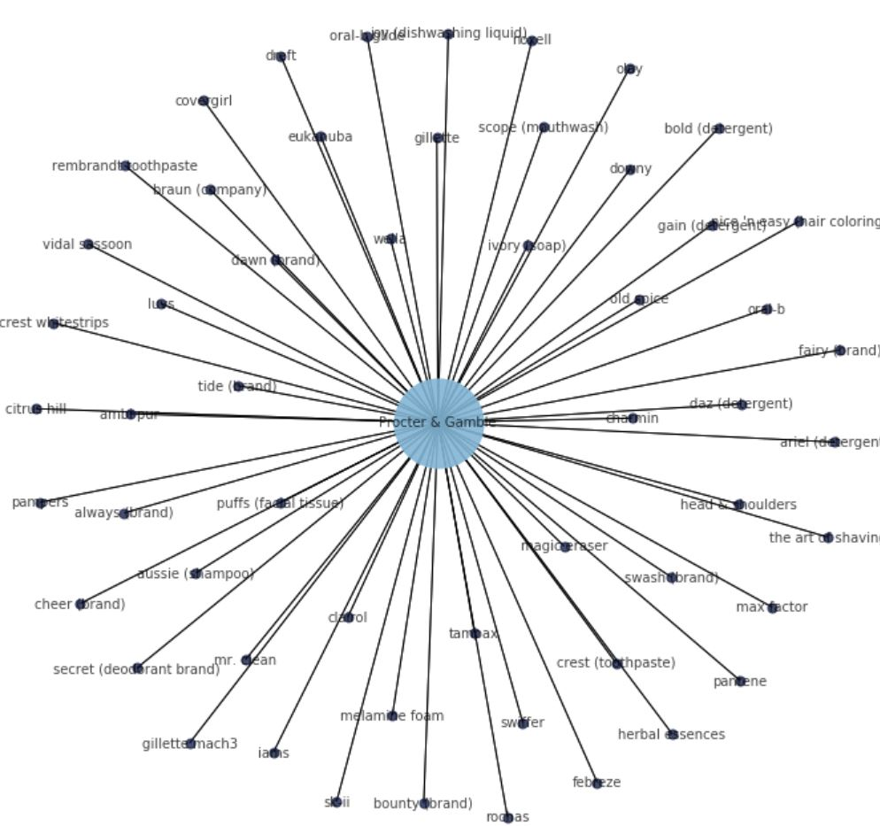
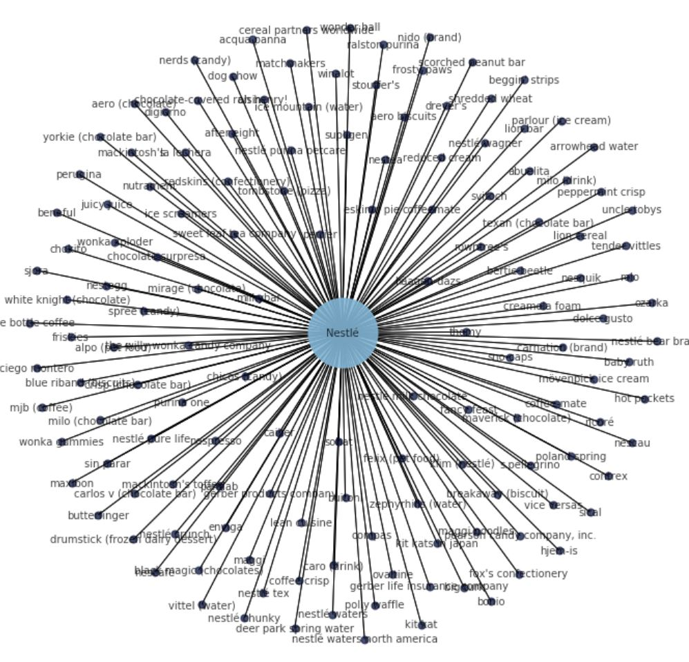

So far, we clean the data in order to ensure to have usable dimension, like Product's Name, Category 1 and Category 2 (Denormalization of Main Category) and Brand.
Furthermore, we enrich the data with Brand/Company information and with "Piece of Sugars". For this one, we added the calculated fields sugars_per_serving and sugars_per_product, which have been calculated from quantity (which requires some type conversion, like kg to mg).
Product's Name
To clean the Product Name, below actions have been performed in order to ensure that each Product contain a valid Name:
Category
Create two generic categories (category_1: for Category of level 1 and Category_2: for Category of level 2) As there are many products without category, or categories which only contains few products, we decided to:
All Brands per Company
Furthermore, we tried to regroup Brands logically, as main of them are owned by the same Company. So we decided to enrich the data with Company And Brands by following informations from the schema above:
To get those infromation, we implemented, with beautiful soup an interface to Wikipedia:
Kraft Foods Network
Network Graph generated from jupyter Notebook through NetworkX.
Data have been extracted, with Beautiful soup, from Wikipedia https://en.wikipedia.org/wiki/Category:Kraft_Foods_brands

|
Kraft Foods: List of Brands a.1. sauce, balance bar, boca burger, bonox, bull's-eye barbecue sauce, calumet baking powder company, capri sun, cheez whiz, chiffon margarine, claussen pickles, cool whip, country time, crystal light, dairylea (cheese), easy cheese, frusen glädjé, general foods, general foods international, grey poupon, jell-o, jet-puffed marshmallows, koogle, kool-aid, kraft dinner, template:kraft foods group, kraft mayo, kraft singles, lunchables, maxwell house, mio, miracle whip, nabob (coffee), oscar mayer, mr. peanut, planter nut & chocolate co., planters, polly-o, pop rocks, rastus, ritz metro, sanka, shake 'n bake, stove top stuffing, vegemite, velveeta, vigroids. |
Wrigley Network
Network Graph generated from jupyter Notebook through NetworkX.
Data have been extracted, with Beautiful soup, from Wikipedia https://en.wikipedia.org/wiki/Category:Wrigley_Company_brands

|
Wrigley: List of Brands airwaves (gum), alert (gum), altoids, big league chew, big red (gum), bubble tape, doublemint, eclipse (breath freshener), excel (gum), extra (gum), freedent, hubba bubba, juicy fruit, life savers, lockets, orbit (gum), ouch! (gum), skittles (confectionery), starburst (confectionery), surpass, tunes (confectionery), winterfresh, wrigley's spearmint. |
Coca-Cola Network
Network Graph generated from jupyter Notebook through NetworkX.
Data have been extracted, with Beautiful soup, from Wikipedia https://en.wikipedia.org/wiki/Category:Coca-Cola_brands

|
Coca-Cola: List of Brands ades, ambasa, ameyal, amita (fruit juice), apollinaris (water), appletiser, aquarius (sports drink), arwa (water), ayataka, barq's, beat (drink), beverly (drink), bibo, caffeine-free coca-cola, cannings foods limited, cappy (juice), carbonated soda treatment of phytobezoars, ciel (beverage), citra (drink), coca-cola, coca-cola black cherry vanilla, coca-cola blāk, coca-cola c2, coca-cola cherry, coca-cola citra, coca-cola clear, coca-cola life, coca-cola light sango, coca-cola orange, coca-cola raspberry, coca-cola vanilla, coca-cola with lemon, coca-cola with lime, coca-cola zero sugar, dasani, deep river rock, delaware punch, diet coke, diet coke lime, diet coke plus, diet coke with citrus zest, diet inca kola, energy brands, enviga, fairlife, fanta, fanta citrus, far coast, fioravanti (soft drink), five alive, fresca, frescolita, frisco (drink), fruitopia, fruktime, frutonic, full throttle (drink), fuze beverage, georgia (coffee), glaceau smartwater, gladiator (energy drink), gold peak tea, gold spot, golden coca-cola, guaraná jesus, hi-c, hit (drink), honest tea, inca kola, innocent drinks, iron brew (south african soft drink), joya (drink), jugos del valle, kia-ora, kinley, kola inglesa, krest, kuat (drink), leed (drink), lemon & paeroa, lift (soft drink), lilt, limca, live+, maaza, malvern water (bottled water), mare rosso, matte leão, mello yello, mexican coke, mezzo mix, minute maid, mother (drink), nalu (drink), nativa, nestea, new coke, nordic mist, oasis (drink), odwalla, ok soda, pemberton's french wine coca, pibb xtra, powerade, qoo, quatro (beverage), quwat jabal, rac 124, ramblin' root beer, rani juice, red flash, relentless (drink), rimzim, royal tru, santiba, sarsi (drink), senzao, simply orange juice company, smart (drink), sokenbicha, sparkle (drink), sparletta, spring! (brand), sprite (soft drink), sprite ice, sprite remix, sprite zero, stoney (drink), sunfill, surge (drink), swerve (drink), tab (drink), tab clear, tab energy, tanora, thums up, tiky, tum-e yummies, urge (drink), valpre, vault (drink), vegitabeta, victoria (soda), vio (drink), yoli. |
Pepsi-co Network
Network Graph generated from jupyter Notebook through NetworkX.
Data have been extracted, with Beautiful soup, from Wikipedia https://fr.wikipedia.org/wiki/Catégorie:Marque_du_groupe_PepsiCo

|
Pepsi-co: List of Brands aquafina, bénénuts, doritos, frito-lay, gatorade, kas (limonade), lay's, mirinda, mountain dew (marque de boisson), mug root beer, pepsi, quaker oats company, ruffles, tropicana. |
Kellogs Network
Network Graph generated from jupyter Notebook through NetworkX.
Data have been extracted, with Beautiful soup, from Wikipedia https://en.wikipedia.org/wiki/Category:Kellogg%27s_brands

|
Kellogs: List of Brands bear naked, eggo, kashi, keebler, gardenburger, morningstar farms, nutri-grain, sunshine biscuits, all-bran, apple jacks, bran buds, coco pops/cocoa krispies, corn flakes, corn pops, complete wheat bran flakes, country store, crispix, cruncheroos, crunchy nut, froot loops, frosted flakes/frosties, frosted mini-wheats, fruit 'n fibre, honey loops, honey smacks, just right, krave, mini swirlz, nutri-grain, cracklin' oat bran, raisin bran, raisin wheats, rice krispies, smorz, special k, start, carr's, cheez-it, chips deluxe, club crackers, e.l. fudge cookies, famous amos, mother's cookies, vienna fingers, wheatables. |
Mars Network
Network Graph generated from jupyter Notebook through NetworkX.
Data have been extracted, with Beautiful soup, from Wikipedia https://en.wikipedia.org/wiki/Category:Mars_brands

|
Mars: List of Brands altoids, cocoavia, combos, cookies &, corn quistos, dolmio, dove bar, ethel m chocolate factory, eukanuba, flavia beverage systems, iams, mars nederland, milky way (spread), milky way (chocolate bar), nutro products, oxo (food), pedigree petfoods, promite, royal canin, seeds of change, sheba (cat food), spillers, uncle ben's, whiskas, whistle (company). |
Unilever Network
Network Graph generated from jupyter Notebook through NetworkX.
Data have been extracted, with Beautiful soup, from Wikipedia https://en.wikipedia.org/wiki/List_of_Unilever_brands

|
Unilever: List of Brands ben & jerry's, best foods, bovril, breyers, brooke bond, instant coffee, brummel & brown, buavita, bushell's, chicken tonight, colman's, conimex, continental, fudgsicle, grom, heartbrand, hellmann's, jif, soya sauce, klondike, knorr, lao cai, lipton, lipton ice tea, lizano sauce, maille, maizena, marmite, mãe terra, peru, paddle pop, pfanni, pg tips, popsicle, pot noodle, pukka, red rose tea, sariwangi, scottish blend, sealtest, streets, talenti, turun sinappi, unox, weis. |
Johnson Network
Network Graph generated from jupyter Notebook through NetworkX.
Data have been extracted, with Beautiful soup, from Wikipedia https://en.wikipedia.org/wiki/Category:Johnson_%26_Johnson_brands

|
Johnson: List of Brands aciphex, actifed, acuvue, arestin, aveeno, axert, band-aid, benadryl, bengay, benylin, clean & clear, codral, comfyde, complera, cortef, dacogen, darzalex, ditropan, edurant, flexeril, floxin, haldol, helioplex, imodium, inadine, incivek, intelence, invega, invega, invokana, ionsys, johnson's baby, jurnista, lactaid, leustatin, levaquin, levoquin, listerine, lubriderm, micatin, motilium, motrin, mylanta, natrecor, neosporin, neutrogena, nicorette, nizoral, nucynta, olysio, onetouch ultra, ortho tri-cyclen, penaten, pepcid, prezista, priligy, procrit, reach (brand), reactine, regaine, rembrandt toothpaste, remicade, reopro, resolor, ribomustin, risperdal, rolaids, simponi, sinutab, sirturo, spectazole, splenda, sporanox, stelara, topamax, tylenol (brand), tylenol pm, ultram, velcade, vermox, visine, xarelto, xeplion, yondelis, zarnestra, zeftera, zevtera, zytiga. |
Procter & Gamble Network
Network Graph generated from jupyter Notebook through NetworkX.
Data have been extracted, with Beautiful soup, from Wikipedia https://en.wikipedia.org/wiki/Category:Procter_%26_Gamble_brands

|
Procter & Gamble: List of Brands always (brand), ambi pur, ariel (detergent), the art of shaving, aussie (shampoo), bold (detergent), bounty (brand), braun (company), charmin, cheer (brand), citrus hill, clairol, covergirl, crest (toothpaste), crest whitestrips, dawn (brand), daz (detergent), downy, dreft, eukanuba, fairy (brand), febreze, gain (detergent), gillette, gillette mach3, head & shoulders, herbal essences, iams, ivory (soap), joy (dishwashing liquid), luvs, magic eraser, max factor, melamine foam, mr. clean, nice 'n easy (hair coloring), noxell, olay, old spice, oral-b, oral-b glide, pampers, pantene, puffs (facial tissue), rembrandt toothpaste, rochas, vidal sassoon, scope (mouthwash), secret (deodorant brand), sk-ii, swash (brand), swiffer, tampax, tide (brand), wella. |
Nestlé Network
Network Graph generated from jupyter Notebook through NetworkX.
Data have been extracted, with Beautiful soup, from Wikipedia https://en.wikipedia.org/wiki/Category:Nestlé_brands
|

|
Nestlé: List of Brands abuelita, aero (chocolate), aero biscuits, after eight, alpo (pet food), arrowhead water, baby ruth, beggin' strips, beneful, bertie beetle, big turk, black magic (chocolates), blue bottle coffee, blue riband (biscuits), bonio, breakaway (biscuit), buitoni, butterfinger, cailler, carlos v (chocolate bar), carnation (brand), caro (drink), cereal partners worldwide, chicos (candy), chocolate surpresa, chocolate-covered raisin, chokito, nestlé chunky, ciego montero, coffee crisp, coffee-mate, coffeemate, contrex, creamola foam, crisp (chocolate bar), deer park spring water, digiorno, dog chow, dolce gusto, dreyer's, drumstick (frozen dairy dessert), enviga, eskimo pie, fancy feast, felix (pet food), fox's confectionery, friskies, frosty paws, gerber life insurance company, gerber products company, häagen-dazs, hjem-is, hot pockets, ice mountain (water), ice screamers, juicy juice, kit kat, kit kats in japan, klim (nestlé), la lechera, lean cuisine, lion bar, lion cereal, mackintosh's, mackintosh's toffee, maggi, maggi noodles, matchmakers, maverick (chocolate), maxibon, milkybar, milo (chocolate bar), milo (drink), mirage (chocolate), mjb (coffee), mövenpick ice cream, nerds (candy), nescafé, nescau, nespresso, nesquik, nestea, nestegg, nestlé bear brand, nestlé crunch, nestlé milk chocolate, nestlé pure life, nestlé purina petcare, nestlé tex, nestlé wagner, nestlé waters north america, nido (brand), nutrament, oh henry!, oompas, ovaltine, ozarka, pamlab, acqua panna, parlour (ice cream), pearson candy company, inc., peppermint crisp, perrier, perugina, poland spring, polly waffle, purina one, ralston purina, redskins (confectionery), reduced cream, ricoré, rolo, rowntree's, s.pellegrino, scorched peanut bar, shredded wheat, sical, sin parar, sjora, sno-caps, sohat, spree (candy), stouffer's, supligen, svitoch, sweet leaf tea company, tender vittles, texan (chocolate bar), thomy, tombstone (pizza), uncle tobys, vice versas, vittel (water), nestlé waters, white knight (chocolate), the willy wonka candy company, winalot, wonder ball, wonka gummies, wonka xploder, yorkie (chocolate bar), zephyrhills (water) |
Pieces of Sugars
Picture provided by Gilles Mairet — Travail personnel, CC BY-SA 4.0, Lien
Data have been renriched in order to have for each products the piece of sugars contained in a Serving and in the overall Product.
To perform that, below functions have been created:
Once done, below fields could be used to measure the quantity of Sugars: sugars_100g, sugars_per_serving, sugars_per_product: